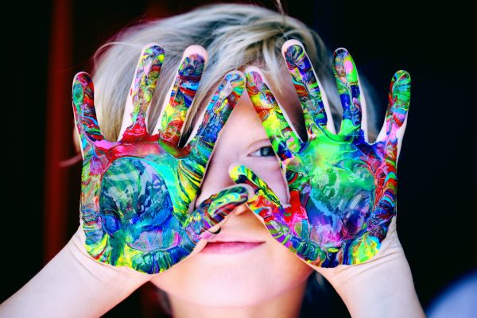
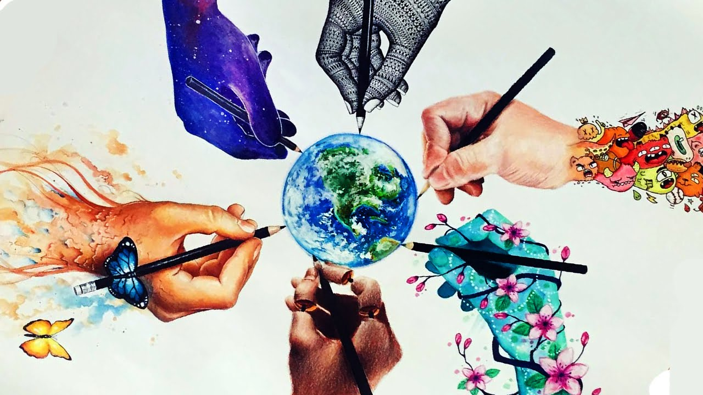
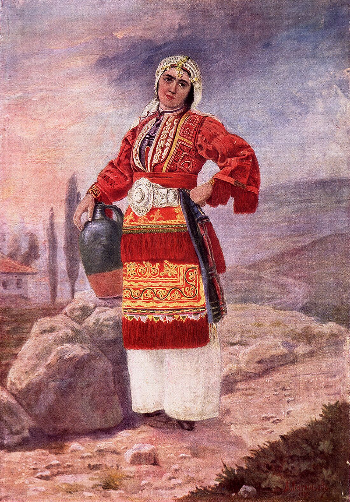
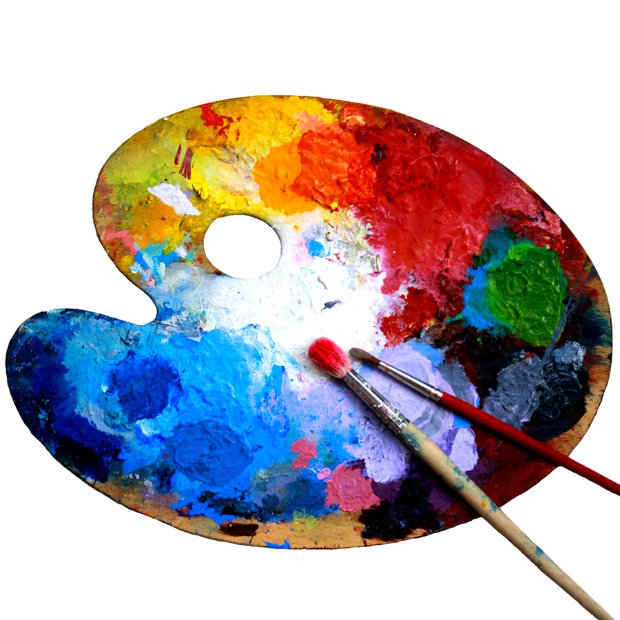

Изобразителното изкуство, наричано напоследък с чуждици като визуално изкуство или визуални изкуства (на английски: visual arts), е художествено творчество, чиято цел е възпроизвеждане на околния свят.
Рисуването е средство за създаване на изображение, като използва голямо разнообразие от инструменти и техники. Това обикновено включва прилагане на контури върху повърхност чрез прилагане на натиск от страна на средство за рисуване или преместване на средството по цяла повърхност с помощта на сухи средства като графитни молив, мастило и перо, напоени четки, цветни восъчни моливи, въглени, пастели и маркери. Използват се и дигитални инструменти, които увеличават ефектите от тях. Основните техники, използвани в рисуването, са: изчертаване на линия, щриховане, гравиране с напречни щрихи, произволно щриховане, надраскване, щриховане с точки и смесване. Художник, който е ненадминат в рисуването, се нарича майстор на рисунъка.
Изобразителното изкуство като извънкласен предмет е едно невероятно изживяване и успокоение от натоварен ден.
|  |
|  |
|